library(tidyverse)
library(patchwork)
library(tidymodels)
library(powerjoin)
library(glue)
library(vip)
library(baguette)
library(sf)
library(spatialsample)
library(vip)Lab 5: Machine Learning in Hydrology
ESS 523c: Environmental Data Science Applications
Set up
Load Packages
Download CAMELs Data From Zenodo
root <- 'https://zenodo.org/records/15529996/files'Get Documentation PDF
download.file('https://zenodo.org/records/15529996/files/camels_attributes_v2.0.pdf?download=1',
'data/camels_attributes_v2.0.pdf',
mode = 'wb')Get Basin Characteristics
a. Create Naming Vectors
types <- c("clim", "geol", "soil", "topo", "vege", "hydro")b. Use Glue to Create URLs
# online ...
remote_files <- glue('{root}/camels_{types}.txt?download=1')
# download the data
local_files <- glue('data/camels_{types}.txt')c. Use walk2
walk2(remote_files, local_files, download.file, quiet = TRUE)d. Read Data Into R and Merge
camels <- map(local_files, read_delim, show_col_types = FALSE) e. Full Join Data
camels <- power_full_join(camels ,by = 'gauge_id')Question 1: Exploratory Data Analysis
zero_q_freq represents the fraction of days when streamflow was zero. It describes how often a basin has no measurable discharge, which is useful for identifying intermittent or ephemeral streams.
Create a map of sites
ggplot(data = camels, aes(x = gauge_lon, y = gauge_lat)) +
borders("state", colour = "gray50") +
geom_point(aes(color = q_mean)) +
scale_color_gradient(low = "pink", high = "dodgerblue") +
ggthemes::theme_map()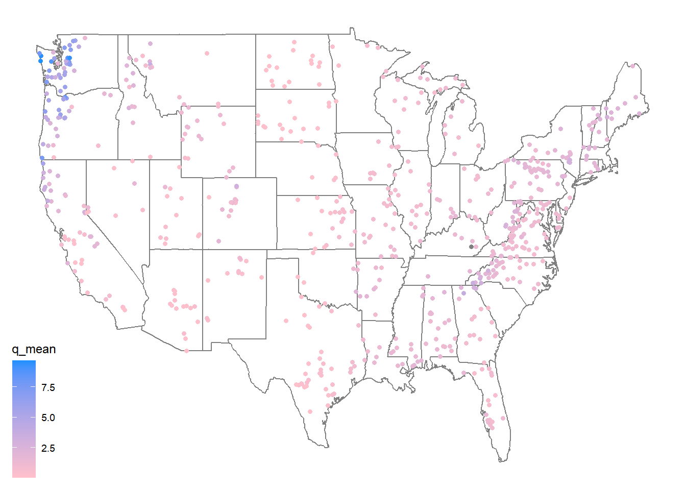
Question 2: Model Preparation
aridity_map <- ggplot(camels, aes(x = gauge_lon, y = gauge_lat)) +
borders("state", colour = "gray60") +
geom_point(aes(color = aridity), size = 2, alpha = 0.85) +
scale_color_viridis_c(name = "Aridity Index") +
labs(
title = "CAMELS Basin Sites Colored by Aridity",
x = "Longitude",
y = "Latitude"
) +
ggthemes::theme_map() +
theme(
plot.title = element_text(face = "bold", size = 12),
legend.position = "right"
)aridity_map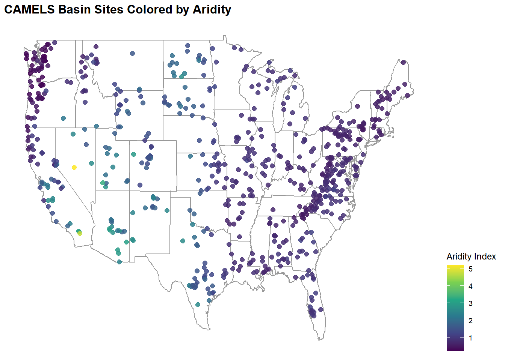
p_mean_map <- ggplot(camels, aes(x = gauge_lon, y = gauge_lat)) +
borders("state", colour = "gray60") +
geom_point(aes(color = p_mean), size = 2, alpha = 0.85) +
scale_color_viridis_c(
name = "Mean Precipitation\n(mm/day)",
option = "C"
) +
labs(
title = "CAMELS Basin Sites Colored by Mean Precipitation",
x = "Longitude",
y = "Latitude"
) +
ggthemes::theme_map() +
theme(
plot.title = element_text(face = "bold", size = 12),
legend.position = "right"
)p_mean_map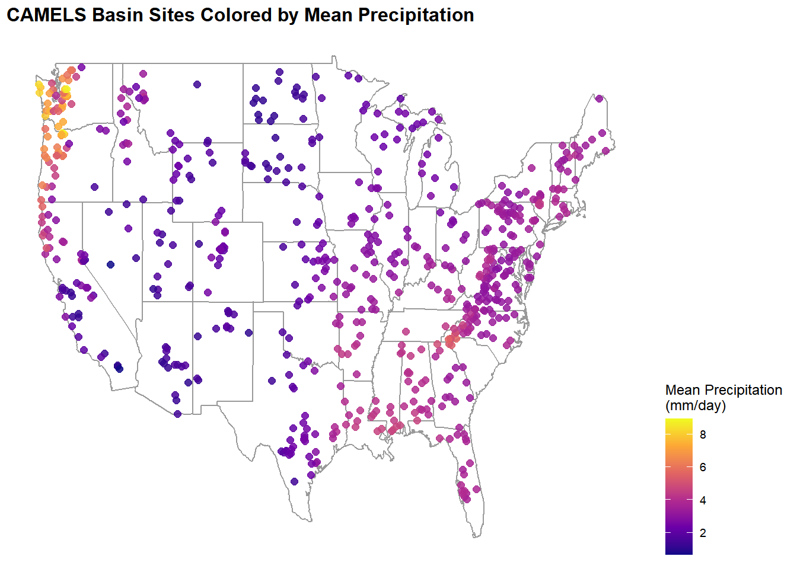
Use Patchwork to Combine Maps
aridity_map + p_mean_map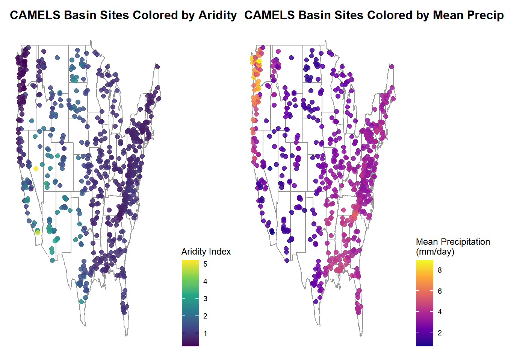
Model Preparation
Check for correlation between precipitation, aridity, and mean flow. Drop NA
camels |>
select(aridity, p_mean, q_mean) |>
drop_na() |>
cor() aridity p_mean q_mean
aridity 1.0000000 -0.7550090 -0.5817771
p_mean -0.7550090 1.0000000 0.8865757
q_mean -0.5817771 0.8865757 1.0000000There is a strong correlation between rainfall and mean flow, and an inverse correlation between aridity and rainfall. While both are high, we are going to see if we can build a model to predict mean flow using aridity and rainfall.
Visual EDA
a. Look at the 3 dimensions of the data. Plot aridity vs rainfall
# Create a scatter plot of aridity vs rainfall
ggplot(camels, aes(x = aridity, y = p_mean)) +
# Add points colored by mean flow
geom_point(aes(color = q_mean)) +
# Add a linear regression line
geom_smooth(method = "lm", color = "red", linetype = 2) +
# Apply the viridis color scale
scale_color_viridis_c() +
# Add a title, axis labels, and theme (w/ legend on the bottom)
theme_linedraw() +
theme(legend.position = "bottom") +
labs(title = "Aridity vs Rainfall vs Runoff",
x = "Aridity",
y = "Rainfall",
color = "Mean Flow")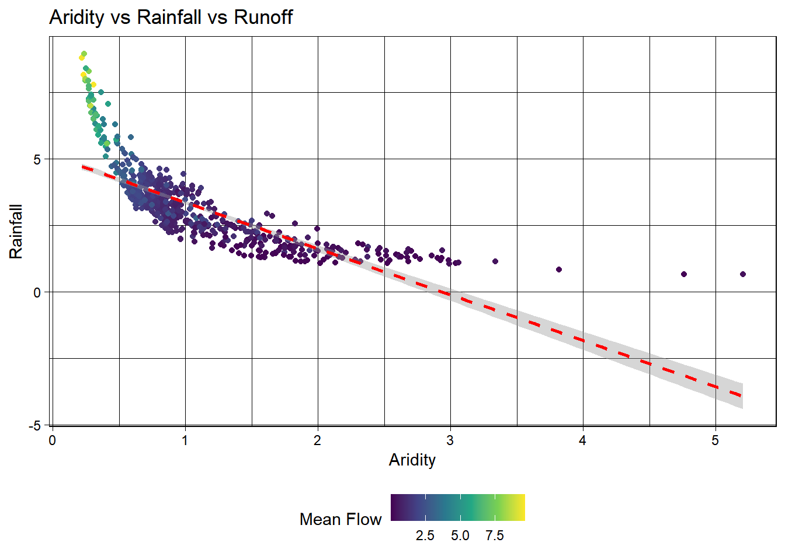
Looks like there is a relationship between rainfall, aridity, and rainfall but it looks like an exponential decay function and is certainly not linear.
To test a transformation, log transform the x and y axes using the scale_x_log10() and scale_y_log10() functions:
ggplot(camels, aes(x = aridity, y = p_mean)) +
geom_point(aes(color = q_mean)) +
geom_smooth(method = "lm") +
scale_color_viridis_c() +
# Apply log transformations to the x and y axes
scale_x_log10() +
scale_y_log10() +
theme_linedraw() +
theme(legend.position = "bottom") +
labs(title = "Aridity vs Rainfall vs Runoff",
x = "Aridity",
y = "Rainfall",
color = "Mean Flow")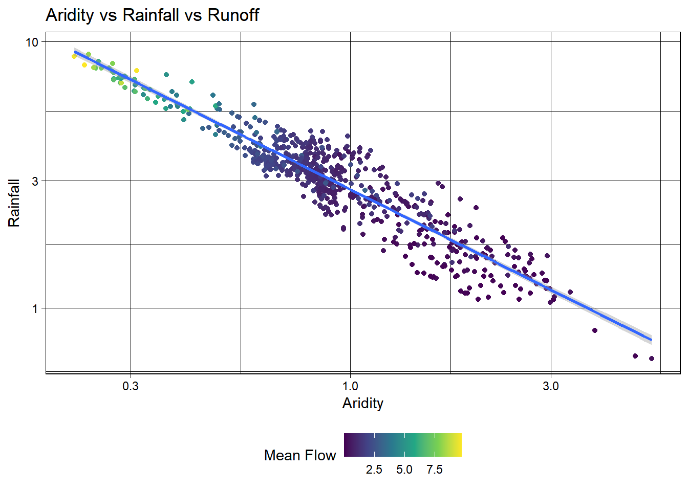
To visualize how a log transform may benefit the q_mean data, use the trans (transform) argument in the scale_color_vidiris() function to log transform the color scale.
ggplot(camels, aes(x = aridity, y = p_mean)) +
geom_point(aes(color = q_mean)) +
geom_smooth(method = "lm") +
# Apply a log transformation to the color scale
scale_color_viridis_c(trans = "log") +
scale_x_log10() +
scale_y_log10() +
theme_linedraw() +
theme(legend.position = "bottom",
# Expand the legend width ...
legend.key.width = unit(2.5, "cm"),
legend.key.height = unit(.5, "cm")) +
labs(title = "Aridity vs Rainfall vs Runoff",
x = "Aridity",
y = "Rainfall",
color = "Mean Flow")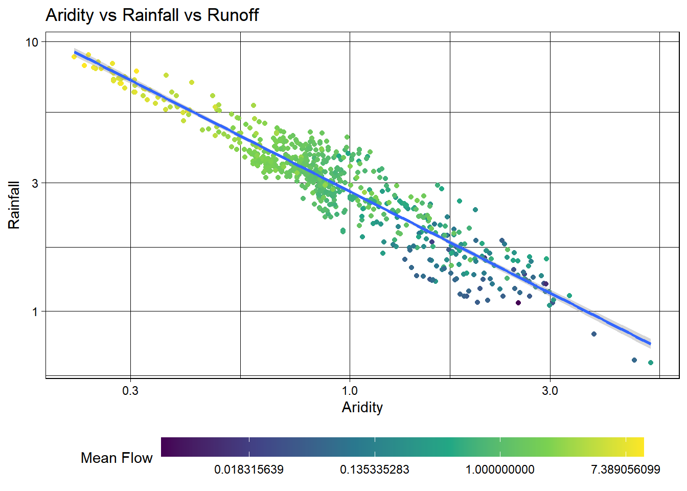
There is a more evenly spread relationship between aridity, rainfall, and mean flow, which is a good sign for building a model to predict mean flow using aridity and rainfall.
Model Building
Split the Data
- Set a seed for reproducibility
- Transform the
q_meancolumn to a log scale. Remember it is error prone to apply transformations to the outcome variable within arecipe. - Split the data into a training and testing set.
- Use 80% of the data for training and 20% for testing.
- Leave stratification off in this example, but stratified splits often matter when the outcome has structure
- Create a 10-fold cross validation dataset to help evaluate multi-model setups.
set.seed(123)
# Bad form to perform simple transformations on the outcome variable within a
# recipe. So, we'll do it here.
camels <- camels |>
mutate(logQmean = log(q_mean))
# Generate the split
camels_split <- initial_split(camels, prop = 0.8)
camels_train <- training(camels_split)
camels_test <- testing(camels_split)
camels_cv <- vfold_cv(camels_train, v = 10)Preprocessor: recipe
recipe() lets us declare a preprocessing pipeline once, estimate its parameters on the training data, and reuse it everywhere: folds, test set, new predictions.
Known:
q_mean,aridity, andp_meancolumns are right skewed and can be helped by log transformationsthe relationship between
aridityandp_meanis non-linear and can be helped by adding an interaction term.
Build a small recipe that encodes those decisions
# Create a recipe to preprocess the data
rec <- recipe(logQmean ~ aridity + p_mean, data = camels_train) %>%
# Log transform the predictor variables (aridity and p_mean)
step_log(all_predictors()) %>%
# Add an interaction term between aridity and p_mean
step_interact(terms = ~ aridity:p_mean) |>
# Drop any rows with missing values in the pred
step_naomit(all_predictors(), all_outcomes())Naive base lm approach:
Fit a linear model to the data. Use prep and bake on the training data to apply the recipe. Then, fit a linear model to the data.
# Prepare the data
baked_data <- prep(rec, camels_train) |>
bake(new_data = NULL)
# Interaction with lm
# Base lm sets interaction terms with the * symbol
lm_base <- lm(logQmean ~ aridity * p_mean, data = baked_data)
summary(lm_base)
Call:
lm(formula = logQmean ~ aridity * p_mean, data = baked_data)
Residuals:
Min 1Q Median 3Q Max
-2.91162 -0.21601 -0.00716 0.21230 2.85706
Coefficients:
Estimate Std. Error t value Pr(>|t|)
(Intercept) -1.77586 0.16365 -10.852 < 2e-16 ***
aridity -0.88397 0.16145 -5.475 6.75e-08 ***
p_mean 1.48438 0.15511 9.570 < 2e-16 ***
aridity:p_mean 0.10484 0.07198 1.457 0.146
---
Signif. codes: 0 '***' 0.001 '**' 0.01 '*' 0.05 '.' 0.1 ' ' 1
Residual standard error: 0.5696 on 531 degrees of freedom
Multiple R-squared: 0.7697, Adjusted R-squared: 0.7684
F-statistic: 591.6 on 3 and 531 DF, p-value: < 2.2e-16# Sanity Interaction term from recipe ... these should be equal!!
summary(lm(logQmean ~ aridity + p_mean + aridity_x_p_mean, data = baked_data))
Call:
lm(formula = logQmean ~ aridity + p_mean + aridity_x_p_mean,
data = baked_data)
Residuals:
Min 1Q Median 3Q Max
-2.91162 -0.21601 -0.00716 0.21230 2.85706
Coefficients:
Estimate Std. Error t value Pr(>|t|)
(Intercept) -1.77586 0.16365 -10.852 < 2e-16 ***
aridity -0.88397 0.16145 -5.475 6.75e-08 ***
p_mean 1.48438 0.15511 9.570 < 2e-16 ***
aridity_x_p_mean 0.10484 0.07198 1.457 0.146
---
Signif. codes: 0 '***' 0.001 '**' 0.01 '*' 0.05 '.' 0.1 ' ' 1
Residual standard error: 0.5696 on 531 degrees of freedom
Multiple R-squared: 0.7697, Adjusted R-squared: 0.7684
F-statistic: 591.6 on 3 and 531 DF, p-value: < 2.2e-16Where things get a little messy
Wrong version 1: augment
The broom package provides a convenient way to extract model predictions and residuals. We can use the augment function to add predicted values to the test data. However, if we use augment directly on the test data, we will get incorrect results because the preprocessing steps defined in the recipe object have not been applied to the test data.
nrow(camels_test)[1] 135nrow(camels_train)[1] 536#broom::augment(lm_base, data = camels_test)Wrong version 2: predict
The predict function can be used to make predictions on new data. However, if we use predict directly on the test data, we will get incorrect results because the preprocessing steps defined in the recipe object have not been applied to the test data
camels_test$p2 = predict(lm_base, newdata = camels_test)
## Scales way off!
ggplot(camels_test, aes(x = p2, y = logQmean)) +
geom_point() +
# Linear fit line, no error bands
geom_smooth(method = "lm", se = FALSE, linewidth = 1) +
# 1:1 line
geom_abline(color = "red", linewidth = 1) +
labs(title = "Linear Model Using `predict()`",
x = "Predicted Log Mean Flow",
y = "Observed Log Mean Flow") +
theme_linedraw()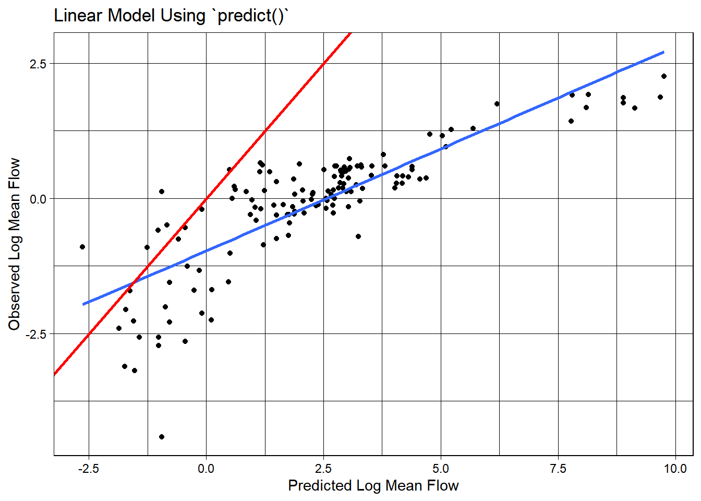
Correct version: prep -> bake -> predict
To correctly evaluate the model on the test data, we need to apply the same preprocessing steps to the test data that we applied to the training data. We can do this using the prep and bake functions with the recipe object. This ensures the test data is transformed in the same way as the training data before making predictions.
test_data <- bake(prep(rec), new_data = camels_test)
test_data$lm_pred <- predict(lm_base, newdata = test_data)Model Evaluation: statistical and visual
Now that we have the predicted values, we can evaluate the model using the metrics function from the yardstick package. This function calculates common regression metrics such as RMSE, R-squared, and MAE between the observed and predicted values.
metrics(test_data, truth = logQmean, estimate = lm_pred)# A tibble: 3 × 3
.metric .estimator .estimate
<chr> <chr> <dbl>
1 rmse standard 0.583
2 rsq standard 0.742
3 mae standard 0.390ggplot(test_data, aes(x = logQmean, y = lm_pred, colour = aridity)) +
# Apply a gradient color scale
scale_color_gradient2(low = "brown", mid = "orange", high = "darkgreen") +
geom_point() +
geom_abline(linetype = 2) +
theme_linedraw() +
labs(title = "Linear Model: Observed vs Predicted",
x = "Observed Log Mean Flow",
y = "Predicted Log Mean Flow",
color = "Aridity")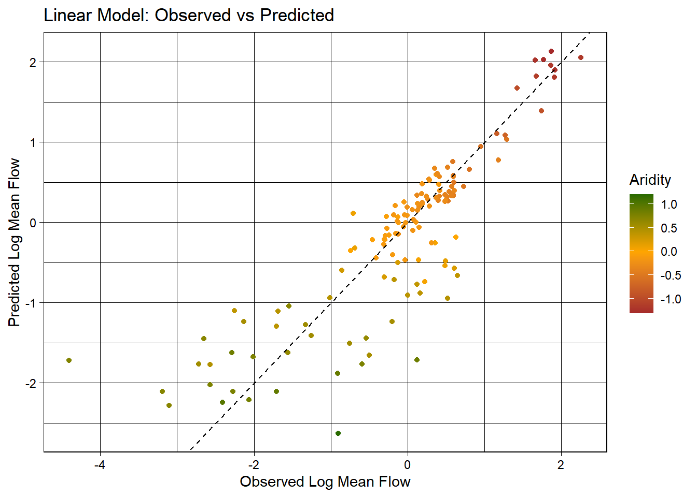
Using a workflow instead
tidymodels provides a framework for building and evaluating models using a consistent and modular workflow. The workflows package lets you bundle a preprocessor (recipe or formula) and a model spec into a single object, then fit them together. This makes it easier to experiment with different models, compare performance, and ensure reproducibility.
Here, we use linear_reg() to define a linear regression model, set the engine to lm, and the mode to regression. We then add our recipe to the workflow, fit the model to the training data, and extract the coefficients.
# Define model
lm_model <- linear_reg() %>%
# define the engine
set_engine("lm") %>%
# define the mode
set_mode("regression")
# Instantiate a workflow ...
lm_wf <- workflow() %>%
# Add the recipe
add_recipe(rec) %>%
# Add the model
add_model(lm_model) %>%
# Fit the model to the training data
fit(data = camels_train)
# Extract the model coefficients from the workflow
summary(extract_fit_engine(lm_wf))$coefficients Estimate Std. Error t value Pr(>|t|)
(Intercept) -1.7758557 0.16364755 -10.851710 6.463654e-25
aridity -0.8839738 0.16144589 -5.475357 6.745512e-08
p_mean 1.4843771 0.15511117 9.569762 4.022500e-20
aridity_x_p_mean 0.1048449 0.07198145 1.456555 1.458304e-01# From the base implementation
summary(lm_base)$coefficients Estimate Std. Error t value Pr(>|t|)
(Intercept) -1.7758557 0.16364755 -10.851710 6.463654e-25
aridity -0.8839738 0.16144589 -5.475357 6.745512e-08
p_mean 1.4843771 0.15511117 9.569762 4.022500e-20
aridity:p_mean 0.1048449 0.07198145 1.456555 1.458304e-01Making Predictions
Now that lm_wf is a workflow, data is not embedded in the model, we can use augment with the new_data argument to make predictions on the test data.
lm_data <- augment(lm_wf, new_data = camels_test)
dim(lm_data)[1] 135 62Model Evaluation: statistical and visual
As with EDA, graphical and statistical evaluation of the model is key. Here, we use the metrics function to extract the default regression metrics (rmse, rsq, mae) between the observed and predicted mean streamflow values.
We then create a scatter plot of the observed vs predicted values, colored by aridity, to visualize the model performance.
metrics(lm_data, truth = logQmean, estimate = .pred)# A tibble: 3 × 3
.metric .estimator .estimate
<chr> <chr> <dbl>
1 rmse standard 0.583
2 rsq standard 0.742
3 mae standard 0.390ggplot(lm_data, aes(x = logQmean, y = .pred, colour = aridity)) +
scale_color_viridis_c() +
geom_point() +
geom_abline() +
theme_linedraw()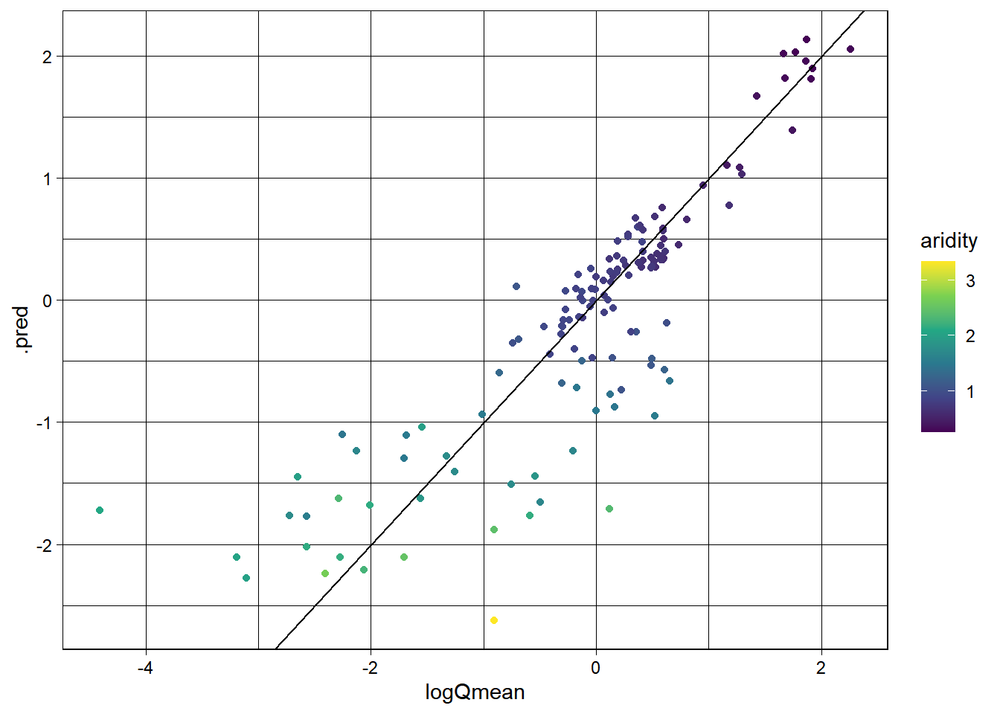
Switch it up!
The real power of this approach is that we can easily switch out the models/recipes and see how it performs. Here, we are going to instead use a random forest model to predict mean streamflow. We define a random forest model using the rand_forest function, set the engine to ranger, and the mode to regression. We then add the recipe, fit the model, and evaluate the skill.
library(baguette)
rf_model <- rand_forest() %>%
set_engine("ranger", importance = "impurity") %>%
set_mode("regression")
rf_wf <- workflow() %>%
# Add the recipe
add_recipe(rec) %>%
# Add the model
add_model(rf_model) %>%
# Fit the model
fit(data = camels_train) Predictions
Make predictions on the test data using the augment function and the new_data argument.
rf_data <- augment(rf_wf, new_data = camels_test)
dim(rf_data)[1] 135 61Model Evaluation: statistical and visual
Evaluate the model using the metrics function and create a scatter plot of the observed vs predicted values, colored by aridity.
metrics(rf_data, truth = logQmean, estimate = .pred)# A tibble: 3 × 3
.metric .estimator .estimate
<chr> <chr> <dbl>
1 rmse standard 0.596
2 rsq standard 0.733
3 mae standard 0.370ggplot(rf_data, aes(x = logQmean, y = .pred, colour = aridity)) +
scale_color_viridis_c() +
geom_point() +
geom_abline() +
theme_linedraw()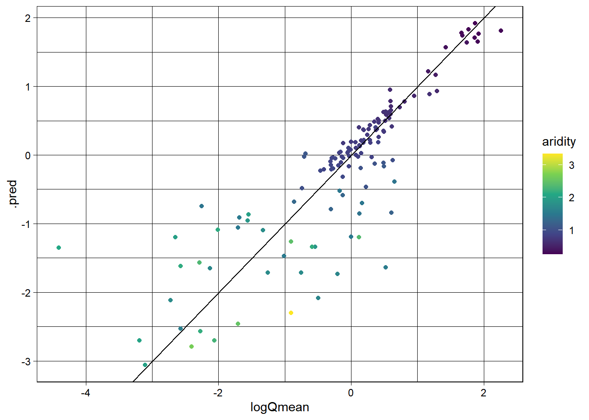
Workflow Set
workflow_set is a powerful tool for comparing multiple models on the same data. It allows you to define a set of workflows, fit them to the same data, and evaluate their performance using a common metric. Here, we are going to create a workflow_set object with the linear regression and random forest models, fit them to the training data, and compare their performance using the autoplot and rank_results functions.
wf <- workflow_set(list(rec), list(lm_model, rf_model)) %>%
workflow_map('fit_resamples', resamples = camels_cv)
autoplot(wf)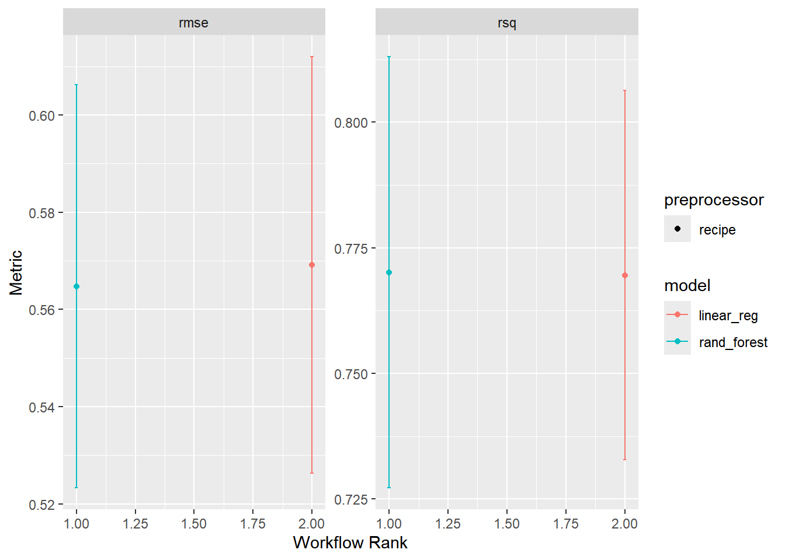
rank_results(wf, rank_metric = "rsq", select_best = TRUE)# A tibble: 4 × 9
wflow_id .config .metric mean std_err n preprocessor model rank
<chr> <chr> <chr> <dbl> <dbl> <int> <chr> <chr> <int>
1 recipe_rand_fore… pre0_m… rmse 0.565 0.0252 10 recipe rand… 1
2 recipe_rand_fore… pre0_m… rsq 0.770 0.0261 10 recipe rand… 1
3 recipe_linear_reg pre0_m… rmse 0.569 0.0260 10 recipe line… 2
4 recipe_linear_reg pre0_m… rsq 0.770 0.0223 10 recipe line… 2Overall it seems the random forest model is outperforming the linear model. This is not surprising given the non-linear relationship between the predictors and the outcome :)
Final Model
The workflow-set comparison above told us the random forest wins. Let’s fit it once more on the full training set so we have a single model object to interrogate:
final <- workflow() |>
add_recipe(rec) |>
add_model(rf_model) |>
fit(data = camels_train)Evaluation
A proper evaluation has three parts:
Variable importance — which predictors is the model actually using? Week 5-2 introduced
vip::vip()paired withextract_fit_parsnip()to pull the underlying model object out of a fitted workflow.Test-set metrics — apply the trained model to data it has never seen.
A predicted-vs-observed plot — the visual sanity check; the 1:1 line should run through the cloud.
final |>
extract_fit_parsnip() |>
vip::vip()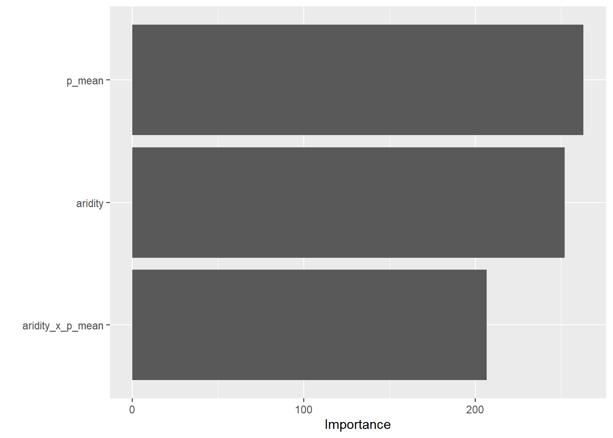
# Predictions on the test set
rf_data <- augment(final, new_data = camels_test)
# Regression metrics (rmse, rsq, mae by default)
metrics(rf_data, truth = logQmean, estimate = .pred)# A tibble: 3 × 3
.metric .estimator .estimate
<chr> <chr> <dbl>
1 rmse standard 0.591
2 rsq standard 0.738
3 mae standard 0.366ggplot(rf_data, aes(x = logQmean, y = .pred, colour = aridity)) +
scale_color_viridis_c() +
geom_point() +
# 1:1 line — perfect prediction
geom_abline(linetype = 2) +
# Actual regression line for contrast
geom_smooth(method = "lm", col = 'red', linetype = 2, se = FALSE) +
theme_linedraw() +
labs(title = "Random Forest Model: Observed vs Predicted",
x = "Observed Log Mean Flow",
y = "Predicted Log Mean Flow",
color = "Aridity")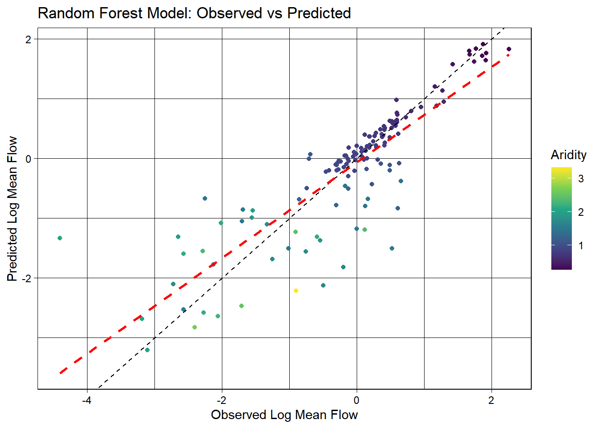
Question 3: Full End-to End Loop Model
Extend the workflow_set above (which already contains the linear model and the random forest) by adding two more models from the Week 6-1 zoo:
Build an
xgboost(engine) regression (mode) model usingboost_treexgb_model <- boost_tree() %>% set_engine("xgboost") %>% set_mode("regression")Build a neural network model using the
nnetengine from thebaguettepackage using thebag_mlpfunctionnnet_model <- bag_mlp() %>% set_engine("nnet") %>% set_mode("regression")Add both to the workflow set and refit against the resamples
wf_q3 <- workflow_set( preproc = list(recipe = rec), models = list( linear_reg = lm_model, rand_forest = rf_model, xgboost = xgb_model, neural_net = nnet_model ) )set.seed(123) wf_q3_fit <- wf_q3 %>% workflow_map( "fit_resamples", resamples = camels_cv, control = control_resamples(save_pred = TRUE) )Compare all four (linear, random forest, xgboost, neural network) with
autoplot()andrank_results()autoplot(wf_q3_fit)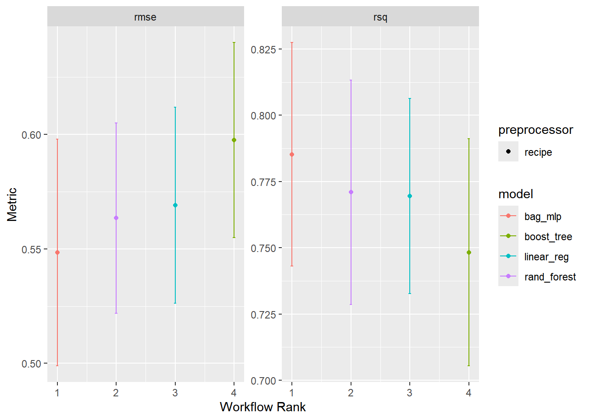
rank_results( wf_q3_fit, rank_metric = "rsq", select_best = TRUE )# A tibble: 8 × 9 wflow_id .config .metric mean std_err n preprocessor model rank <chr> <chr> <chr> <dbl> <dbl> <int> <chr> <chr> <int> 1 recipe_neural_net pre0_m… rmse 0.548 0.0301 10 recipe bag_… 1 2 recipe_neural_net pre0_m… rsq 0.785 0.0256 10 recipe bag_… 1 3 recipe_rand_fore… pre0_m… rmse 0.563 0.0252 10 recipe rand… 2 4 recipe_rand_fore… pre0_m… rsq 0.771 0.0258 10 recipe rand… 2 5 recipe_linear_reg pre0_m… rmse 0.569 0.0260 10 recipe line… 3 6 recipe_linear_reg pre0_m… rsq 0.770 0.0223 10 recipe line… 3 7 recipe_xgboost pre0_m… rmse 0.597 0.0259 10 recipe boos… 4 8 recipe_xgboost pre0_m… rsq 0.748 0.0261 10 recipe boos… 4I would move forward with the neural network model because it had the best overall cross-validation performance. It had the lowest RMSE of 0.548 and the highest R² of 0.785, meaning it explained the most variation in log mean flow and had the lowest prediction error compared to the other models.
Question 4: My Model
Data prep & EDA
Set Seed
set.seed(123)Create working dataset
camels_ml <- camels %>%
mutate(
logQmean = log(q_mean),
aridity_group = ntile(aridity, 4) |> as.factor()
) %>%
select(
gauge_id, gauge_lat, gauge_lon,
logQmean, q_mean,
aridity, p_mean, pet_mean,
frac_snow, high_prec_freq, high_prec_dur,
low_prec_freq, low_prec_dur,
elev_mean, slope_mean,
soil_depth_pelletier, soil_depth_statsgo,
soil_porosity, soil_conductivity,
max_water_content,
lai_max, gvf_max,
frac_forest
)library(skimr)
skimr::skim(camels_ml)| Name | camels_ml |
| Number of rows | 671 |
| Number of columns | 23 |
| _______________________ | |
| Column type frequency: | |
| character | 1 |
| numeric | 22 |
| ________________________ | |
| Group variables | None |
Variable type: character
| skim_variable | n_missing | complete_rate | min | max | empty | n_unique | whitespace |
|---|---|---|---|---|---|---|---|
| gauge_id | 0 | 1 | 8 | 8 | 0 | 671 | 0 |
Variable type: numeric
| skim_variable | n_missing | complete_rate | mean | sd | p0 | p25 | p50 | p75 | p100 | hist |
|---|---|---|---|---|---|---|---|---|---|---|
| gauge_lat | 0 | 1 | 39.24 | 5.21 | 27.05 | 35.70 | 39.25 | 43.21 | 48.82 | ▂▃▇▆▅ |
| gauge_lon | 0 | 1 | -95.79 | 16.21 | -124.39 | -110.41 | -92.78 | -81.77 | -67.94 | ▆▃▇▇▅ |
| logQmean | 1 | 1 | -0.11 | 1.17 | -5.39 | -0.46 | 0.12 | 0.56 | 2.27 | ▁▁▂▇▂ |
| q_mean | 1 | 1 | 1.49 | 1.54 | 0.00 | 0.63 | 1.13 | 1.75 | 9.69 | ▇▁▁▁▁ |
| aridity | 0 | 1 | 1.06 | 0.62 | 0.22 | 0.70 | 0.86 | 1.27 | 5.21 | ▇▂▁▁▁ |
| p_mean | 0 | 1 | 3.26 | 1.41 | 0.64 | 2.37 | 3.23 | 3.78 | 8.94 | ▃▇▂▁▁ |
| pet_mean | 0 | 1 | 2.79 | 0.55 | 1.90 | 2.34 | 2.69 | 3.15 | 4.74 | ▇▇▅▂▁ |
| frac_snow | 0 | 1 | 0.18 | 0.20 | 0.00 | 0.04 | 0.10 | 0.22 | 0.91 | ▇▂▁▁▁ |
| high_prec_freq | 0 | 1 | 20.93 | 4.55 | 7.90 | 18.50 | 22.00 | 24.23 | 32.70 | ▂▃▇▇▁ |
| high_prec_dur | 0 | 1 | 1.35 | 0.19 | 1.08 | 1.21 | 1.28 | 1.44 | 2.09 | ▇▅▂▁▁ |
| low_prec_freq | 0 | 1 | 254.65 | 35.12 | 169.90 | 232.70 | 255.85 | 278.92 | 348.70 | ▂▅▇▅▁ |
| low_prec_dur | 0 | 1 | 5.95 | 3.20 | 2.79 | 4.24 | 4.95 | 6.70 | 36.51 | ▇▁▁▁▁ |
| elev_mean | 0 | 1 | 759.42 | 786.00 | 10.21 | 249.67 | 462.72 | 928.88 | 3571.18 | ▇▂▁▁▁ |
| slope_mean | 0 | 1 | 46.20 | 47.12 | 0.82 | 7.43 | 28.80 | 73.17 | 255.69 | ▇▂▂▁▁ |
| soil_depth_pelletier | 0 | 1 | 10.87 | 16.24 | 0.27 | 1.00 | 1.23 | 12.89 | 50.00 | ▇▁▁▁▁ |
| soil_depth_statsgo | 0 | 1 | 1.29 | 0.27 | 0.40 | 1.11 | 1.46 | 1.50 | 1.50 | ▁▁▂▂▇ |
| soil_porosity | 0 | 1 | 0.44 | 0.02 | 0.37 | 0.43 | 0.44 | 0.46 | 0.68 | ▃▇▁▁▁ |
| soil_conductivity | 0 | 1 | 1.74 | 1.52 | 0.45 | 0.93 | 1.35 | 1.93 | 13.96 | ▇▁▁▁▁ |
| max_water_content | 0 | 1 | 0.53 | 0.15 | 0.09 | 0.43 | 0.56 | 0.64 | 1.05 | ▁▅▇▃▁ |
| lai_max | 0 | 1 | 3.22 | 1.52 | 0.37 | 1.81 | 3.37 | 4.70 | 5.58 | ▅▆▃▅▇ |
| gvf_max | 0 | 1 | 0.72 | 0.17 | 0.18 | 0.61 | 0.78 | 0.86 | 0.92 | ▁▁▂▃▇ |
| frac_forest | 0 | 1 | 0.64 | 0.37 | 0.00 | 0.28 | 0.81 | 0.97 | 1.00 | ▃▁▁▂▇ |
library(visdat)
visdat::vis_dat(camels_ml)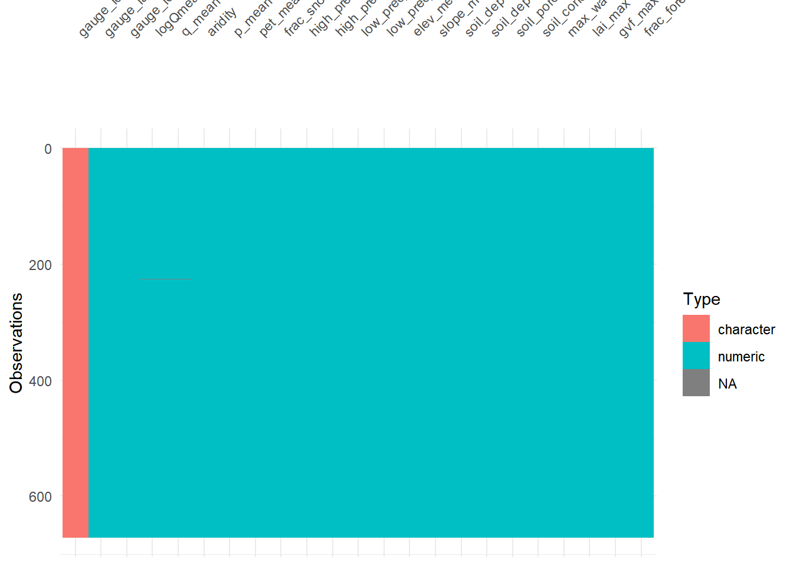
The CAMELS dataset is mostly made of numeric variables describing climate, hydrology, soil, and topography, with guage_id as the only character variable. Missingness is minimal, with only one missing value in q_mean and logQmean, meaning the dataset is mostly complete and sutable for modeling. The distribution summaries and histograms show that q_mean is strongly right-skewed, while predictors such as precipitation and aridity are also skewed, justifying the use of log transformations. These support applying preprocessing step and removing missing values, which will help stabilize variance and improve model performance.
Data Visualization
ggplot(camels_ml, aes(x = q_mean)) +
geom_histogram(bins = 30, fill = "steelblue", color = "white") +
theme_linedraw() +
labs(
title = "Distribution of Mean Streamflow (q_mean)",
x = "q_mean",
y = "Count"
)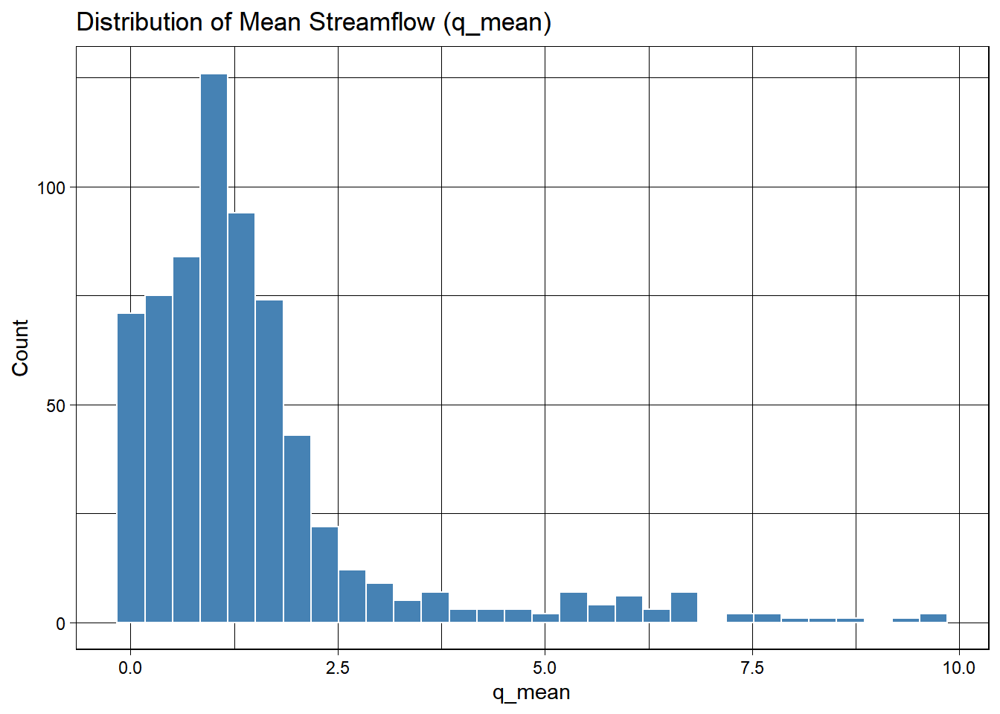
ggplot(camels_ml, aes(x = logQmean)) +
geom_histogram(bins = 30, fill = "darkgreen", color = "white") +
theme_linedraw() +
labs(
title = "Distribution of Log Mean Streamflow",
x = "log(q_mean)",
y = "Count"
)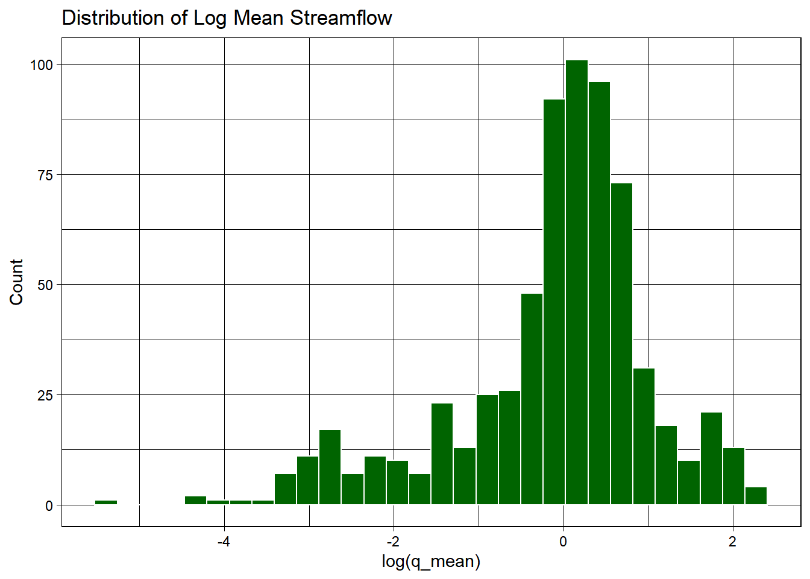
camels_ml %>%
select(aridity, p_mean, pet_mean, frac_snow) %>%
pivot_longer(cols = everything()) %>%
ggplot(aes(x = value)) +
geom_histogram(bins = 30, fill = "gray60", color = "white") +
facet_wrap(~ name, scales = "free") +
theme_linedraw() +
labs(
title = "Predictor Distributions",
x = "Value",
y = "Count"
)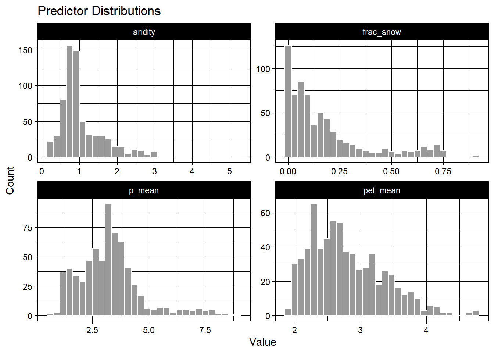
Moran’s I
library(ape)
set.seed(10)
samp <- camels_ml %>%
drop_na() %>%
slice_sample(n = 400)
dmat <- as.matrix(dist(cbind(samp$gauge_lon, samp$gauge_lat)))
W <- 1 / dmat
diag(W) <- 0
W <- W / rowSums(W)
preds_I <- samp %>%
select(where(is.numeric), -q_mean, -logQmean) %>%
map_dfr(
~ tibble(I = Moran.I(.x, W)$observed),
.id = "variable"
) %>%
arrange(desc(I))
preds_I# A tibble: 20 × 2
variable I
<chr> <dbl>
1 gauge_lon 0.684
2 high_prec_dur 0.517
3 slope_mean 0.444
4 p_mean 0.432
5 low_prec_freq 0.411
6 gauge_lat 0.402
7 elev_mean 0.384
8 low_prec_dur 0.379
9 lai_max 0.373
10 high_prec_freq 0.370
11 gvf_max 0.365
12 aridity 0.334
13 frac_snow 0.333
14 frac_forest 0.294
15 pet_mean 0.285
16 max_water_content 0.226
17 soil_depth_statsgo 0.225
18 soil_depth_pelletier 0.216
19 soil_conductivity 0.186
20 soil_porosity 0.138Create Initial Split 75 to 25
camels_split <- initial_split(
camels_ml,
prop = 0.75,
strata = aridity
)camels_train <- training(camels_split)
camels_test <- testing(camels_split)nrow(camels_train)[1] 503nrow(camels_test)[1] 168Check Stratification (But remove for submission)
Recipe
Formula
logQmean ~ aridity + p_mean + pet_mean + elev_mean + slope_mean +
soil_porosity + soil_conductivity + max_water_content +
frac_snow + lai_max + frac_forestlogQmean ~ aridity + p_mean + pet_mean + elev_mean + slope_mean +
soil_porosity + soil_conductivity + max_water_content + frac_snow +
lai_max + frac_forestThe goal of the model is to predict mean streamflow, which is influenced by parameters such as climate, topography, soil, and vegetation characteristics. Variables such as precipitation and aridity are expected to be the strongest drivers of streamflow, as they directly control water and atmospheric demand. Topographic variables like elevation and slope influence runoff and routing. Soil properties such as porosity, conductivity, and maximum water content affect infiltration and storage. Leaf area index and forest fraction, impact evapotranspiration and water retention. According to the CAMELS pdf, these variables represent key hydrologic processes such as precipitation inputs, evapotranspiration demand, and watershed storage characteristics .
Exploratory data analysis showed that q_mean and several predictors are right-skewed, justifying the use of log transformations. Additionally, the relationship between aridity and precipitation is non-linear, motivating the inclusion of an interaction term. Missing values are minimal but present, so removing incomplete cases ensures consistency in model training. Since predictors are on different scales, so normalization is used to improve model stability and performance.
Recipe
rec <- recipe(
logQmean ~ aridity + p_mean + pet_mean + elev_mean + slope_mean +
soil_porosity + soil_conductivity + max_water_content +
frac_snow + lai_max + frac_forest,
data = camels_train
) %>%
step_naomit(all_predictors(), all_outcomes()) %>%
step_log(aridity, p_mean, pet_mean, frac_snow, offset = 1) %>%
step_interact(terms = ~ aridity:p_mean) %>%
step_normalize(all_predictors())Define 3 Models
Random Forest Model
rf_model <- rand_forest() %>%
set_engine("ranger", importance = "impurity") %>%
set_mode("regression")I included a random forest model because it can capture complex nonlinear relationships and interactions among hydrologic predictors while being relatively robust to overfitting.
Linear Regression Model
lm_model <- linear_reg() %>%
set_engine("lm") %>%
set_mode("regression")I used a linear regression model because it provides a simple, interpretable baseline and can beuseful for assessing whether the main relationships in the data are approximately linear after transformation.
Boosted Tree
xgb_model <- boost_tree() %>%
set_engine("xgboost") %>%
set_mode("regression")I included a boosted tree model because it can model complex nonlinear structure and often performs very well on environmental datasets by combining many weak trees into a predictive model.
Workflow Set- Compare with Honest CV
camels_train_sf <- camels_train %>%
st_as_sf(coords = c("gauge_lon", "gauge_lat"), crs = 4326, remove = FALSE)set.seed(123)
camels_folds <- vfold_cv(
camels_train,
v = 10,
strata = aridity
)camels_block <- spatial_block_cv(
camels_train_sf,
v = 10
)
print(camels_block, n = 3)# 10-fold spatial block cross-validation
# A tibble: 10 × 2
splits id
<list> <chr>
1 <split [440/63]> Fold01
2 <split [459/44]> Fold02
3 <split [438/65]> Fold03
# ℹ 7 more rowsWorkflow Set
wf_set <- workflow_set(
preproc = list(main = rec),
models = list(
linear_reg = lm_model,
rand_forest = rf_model,
xgboost = xgb_model
)
)Fit under random
set.seed(123)
wf_random <- wf_set %>%
workflow_map(
"fit_resamples",
resamples = camels_folds,
metrics = metric_set(rmse, rsq, mae),
control = control_resamples(save_pred = TRUE)
)
autoplot(wf_random)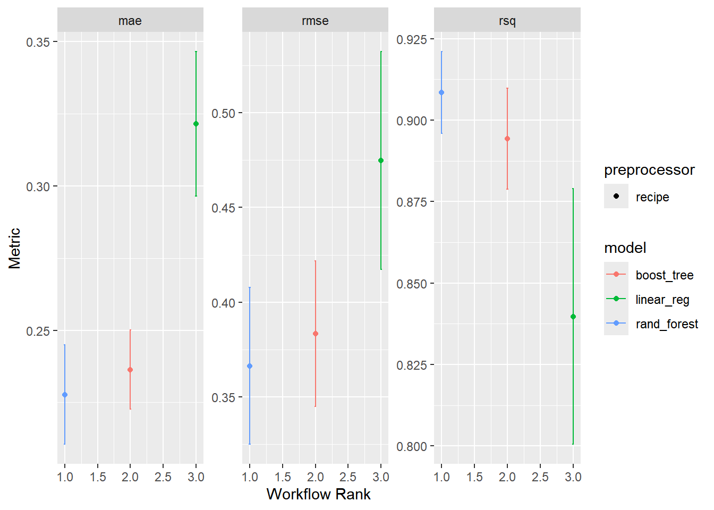
rank_results(
wf_random,
rank_metric = "rsq",
select_best = TRUE
)# A tibble: 9 × 9
wflow_id .config .metric mean std_err n preprocessor model rank
<chr> <chr> <chr> <dbl> <dbl> <int> <chr> <chr> <int>
1 main_rand_forest pre0_mo… mae 0.228 0.0105 10 recipe rand… 1
2 main_rand_forest pre0_mo… rmse 0.366 0.0252 10 recipe rand… 1
3 main_rand_forest pre0_mo… rsq 0.908 0.00761 10 recipe rand… 1
4 main_xgboost pre0_mo… mae 0.236 0.00828 10 recipe boos… 2
5 main_xgboost pre0_mo… rmse 0.383 0.0234 10 recipe boos… 2
6 main_xgboost pre0_mo… rsq 0.894 0.00941 10 recipe boos… 2
7 main_linear_reg pre0_mo… mae 0.321 0.0152 10 recipe line… 3
8 main_linear_reg pre0_mo… rmse 0.475 0.0349 10 recipe line… 3
9 main_linear_reg pre0_mo… rsq 0.840 0.0238 10 recipe line… 3Fit under spatial
set.seed(123)
wf_spatial <- wf_set %>%
workflow_map(
"fit_resamples",
resamples = camels_block,
metrics = metric_set(rmse, rsq, mae),
control = control_resamples(save_pred = TRUE)
)
autoplot(wf_spatial)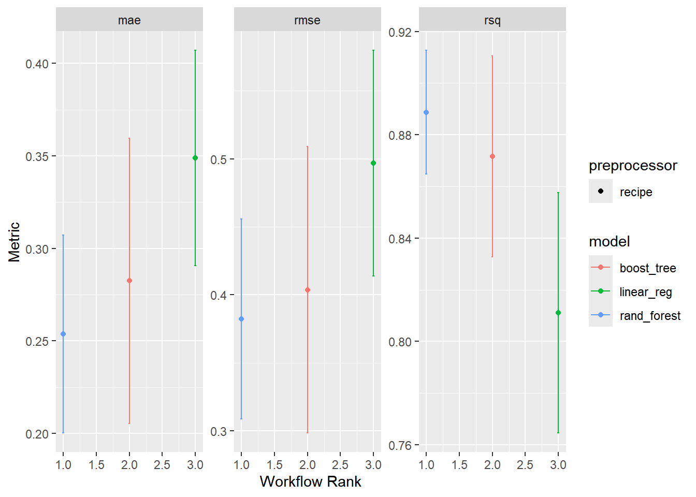
rank_results(
wf_spatial,
rank_metric = "rsq",
select_best = TRUE
)# A tibble: 9 × 9
wflow_id .config .metric mean std_err n preprocessor model rank
<chr> <chr> <chr> <dbl> <dbl> <int> <chr> <chr> <int>
1 main_rand_forest pre0_mo… mae 0.254 0.0326 10 recipe rand… 1
2 main_rand_forest pre0_mo… rmse 0.382 0.0447 10 recipe rand… 1
3 main_rand_forest pre0_mo… rsq 0.889 0.0145 10 recipe rand… 1
4 main_xgboost pre0_mo… mae 0.282 0.0468 10 recipe boos… 2
5 main_xgboost pre0_mo… rmse 0.404 0.0641 10 recipe boos… 2
6 main_xgboost pre0_mo… rsq 0.872 0.0236 10 recipe boos… 2
7 main_linear_reg pre0_mo… mae 0.349 0.0354 10 recipe line… 3
8 main_linear_reg pre0_mo… rmse 0.497 0.0504 10 recipe line… 3
9 main_linear_reg pre0_mo… rsq 0.811 0.0283 10 recipe line… 3Compare the Random and Spatial Model
random_rank <- rank_results(
wf_random,
rank_metric = "rsq",
select_best = TRUE
) %>%
mutate(scheme = "random_vfold_cv")
spatial_rank <- rank_results(
wf_spatial,
rank_metric = "rsq",
select_best = TRUE
) %>%
mutate(scheme = "spatial_cv")
bind_rows(random_rank, spatial_rank) %>%
arrange(scheme, rank)# A tibble: 18 × 10
wflow_id .config .metric mean std_err n preprocessor model rank scheme
<chr> <chr> <chr> <dbl> <dbl> <int> <chr> <chr> <int> <chr>
1 main_ran… pre0_m… mae 0.228 0.0105 10 recipe rand… 1 rando…
2 main_ran… pre0_m… rmse 0.366 0.0252 10 recipe rand… 1 rando…
3 main_ran… pre0_m… rsq 0.908 0.00761 10 recipe rand… 1 rando…
4 main_xgb… pre0_m… mae 0.236 0.00828 10 recipe boos… 2 rando…
5 main_xgb… pre0_m… rmse 0.383 0.0234 10 recipe boos… 2 rando…
6 main_xgb… pre0_m… rsq 0.894 0.00941 10 recipe boos… 2 rando…
7 main_lin… pre0_m… mae 0.321 0.0152 10 recipe line… 3 rando…
8 main_lin… pre0_m… rmse 0.475 0.0349 10 recipe line… 3 rando…
9 main_lin… pre0_m… rsq 0.840 0.0238 10 recipe line… 3 rando…
10 main_ran… pre0_m… mae 0.254 0.0326 10 recipe rand… 1 spati…
11 main_ran… pre0_m… rmse 0.382 0.0447 10 recipe rand… 1 spati…
12 main_ran… pre0_m… rsq 0.889 0.0145 10 recipe rand… 1 spati…
13 main_xgb… pre0_m… mae 0.282 0.0468 10 recipe boos… 2 spati…
14 main_xgb… pre0_m… rmse 0.404 0.0641 10 recipe boos… 2 spati…
15 main_xgb… pre0_m… rsq 0.872 0.0236 10 recipe boos… 2 spati…
16 main_lin… pre0_m… mae 0.349 0.0354 10 recipe line… 3 spati…
17 main_lin… pre0_m… rmse 0.497 0.0504 10 recipe line… 3 spati…
18 main_lin… pre0_m… rsq 0.811 0.0283 10 recipe line… 3 spati…The workflow comparison showed that the random forest model performed best under both random 10-fold cross-validation and spatial cross-validation. Under the random CV, random forest had the strongest performance with an RMSE of 0.366, MAE of 0.228, and R² of 0.908, followed by XGBoost and linear regression. Under spatial CV, performance declined slightly for all models, but the ranking stayed the same with the random forest remained best with an RMSE of 0.382, MAE of 0.254, and R² of 0.889. The small drop in performance from random CV to spatial CV suggests that the model may be learning relationships from climate, soil, vegetation, and topographic predictors rather than depending mainly on geographic proximity. This can indicate limited spatial leakage and give more confidence that the random forest model can work to new basins.
Tune the Model
Since random forest was the best model under spatial CV, tune mtry and min_n since mtry controls how many predictors each split can consider and min_n controls how complex the trees can get.
rf_tune <- rand_forest(
mtry = tune(),
min_n = tune(),
trees = 1000
) %>%
set_engine("ranger", importance = "impurity") %>%
set_mode("regression")rf_wf <- workflow() %>%
add_recipe(rec) %>%
add_model(rf_tune)Set parameters
rf_param <- rf_wf %>%
extract_parameter_set_dials() %>%
finalize(camels_train)#fix error below
rf_param <- parameters(
mtry(range = c(1L, 12L)),
min_n(range = c(2L, 25L))
)Build a space-filling grid
set.seed(123)
rf_grid <- grid_space_filling(
rf_param,
size = 20
)
rf_grid# A tibble: 20 × 2
mtry min_n
<int> <int>
1 1 9
2 1 15
3 2 21
4 2 4
5 3 11
6 3 17
7 4 23
8 4 8
9 5 2
10 5 14
11 6 20
12 6 5
13 7 25
14 7 10
15 8 16
16 8 3
17 9 22
18 10 12
19 11 6
20 12 18I used a space-filling grid because it spreads candidate combinations efficiently across the tuning space and gives good coverage with a moderate number of evaluations.
Tune Grid on Spatial Re-samples
set.seed(123)
rf_tuned <- rf_wf %>%
tune_grid(
resamples = camels_block,
grid = rf_grid,
control = control_grid(save_pred = TRUE),
metrics = metric_set(rmse, rsq, mae)
)Show the Tuning Landscape
autoplot(rf_tuned)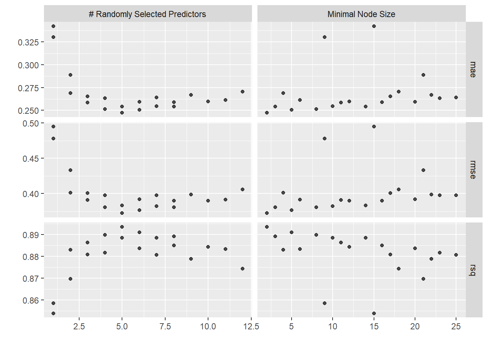
collect_metrics(rf_tuned)# A tibble: 60 × 8
mtry min_n .metric .estimator mean n std_err .config
<int> <int> <chr> <chr> <dbl> <int> <dbl> <chr>
1 1 9 mae standard 0.330 10 0.0338 pre0_mod01_post0
2 1 9 rmse standard 0.478 10 0.0494 pre0_mod01_post0
3 1 9 rsq standard 0.858 10 0.0200 pre0_mod01_post0
4 1 15 mae standard 0.342 10 0.0341 pre0_mod02_post0
5 1 15 rmse standard 0.495 10 0.0489 pre0_mod02_post0
6 1 15 rsq standard 0.854 10 0.0210 pre0_mod02_post0
7 2 4 mae standard 0.269 10 0.0324 pre0_mod03_post0
8 2 4 rmse standard 0.401 10 0.0454 pre0_mod03_post0
9 2 4 rsq standard 0.883 10 0.0156 pre0_mod03_post0
10 2 21 mae standard 0.289 10 0.0316 pre0_mod04_post0
# ℹ 50 more rowsIdentify Best Combination
show_best(rf_tuned, metric = "rsq")# A tibble: 5 × 8
mtry min_n .metric .estimator mean n std_err .config
<int> <int> <chr> <chr> <dbl> <int> <dbl> <chr>
1 5 2 rsq standard 0.893 10 0.0143 pre0_mod09_post0
2 6 5 rsq standard 0.891 10 0.0152 pre0_mod11_post0
3 4 8 rsq standard 0.890 10 0.0150 pre0_mod07_post0
4 8 3 rsq standard 0.889 10 0.0158 pre0_mod15_post0
5 7 10 rsq standard 0.888 10 0.0155 pre0_mod13_post0show_best(rf_tuned, metric = "rmse")# A tibble: 5 × 8
mtry min_n .metric .estimator mean n std_err .config
<int> <int> <chr> <chr> <dbl> <int> <dbl> <chr>
1 5 2 rmse standard 0.372 10 0.0442 pre0_mod09_post0
2 6 5 rmse standard 0.376 10 0.0449 pre0_mod11_post0
3 8 3 rmse standard 0.380 10 0.0467 pre0_mod15_post0
4 4 8 rmse standard 0.380 10 0.0433 pre0_mod07_post0
5 7 10 rmse standard 0.382 10 0.0450 pre0_mod13_post0rf_best <- select_best(rf_tuned, metric = "rsq")
rf_best# A tibble: 1 × 3
mtry min_n .config
<int> <int> <chr>
1 5 2 pre0_mod09_post0The tuning results show that the best-performing random forest used mtry =5 and min_n =2. This suggests the model performed best when each split considered a moderate subset of predictors while allowing relatively deep trees to capture nonlinear hydrologic relationships. The tuning results may indicate that the model was sensitive to tree complexity, and by allowing smaller terminal node sizes improved predictive performance.
Variable Importance
Create Vip Plot
rf_final_wf <- finalize_workflow(rf_wf, rf_best)
rf_final_fit <- fit(rf_final_wf, data = camels_train)rf_final_fit %>%
extract_fit_parsnip() %>%
vip::vip(num_features = 10) +
labs(
title = "Random Forest Variable Importance",
subtitle = "Impurity-based importance"
)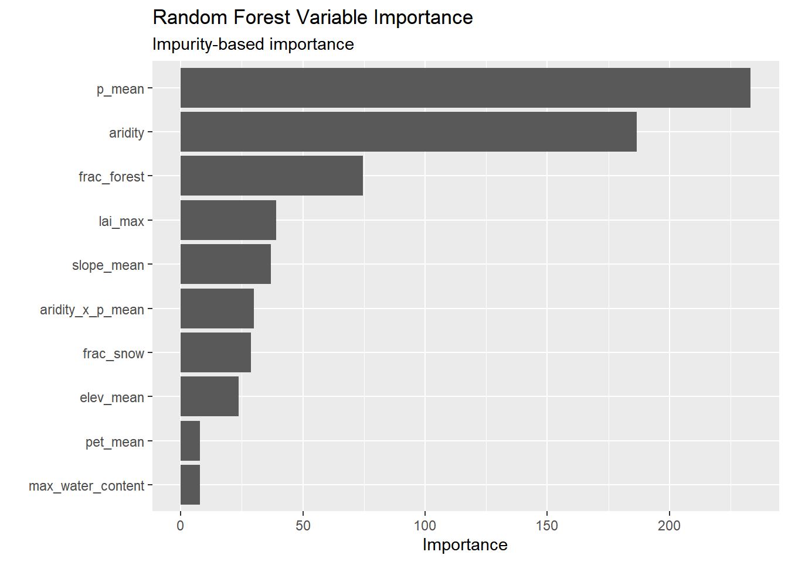
The variable importance plot shows that the tuned random forest relied most heavily on p_mean and aridity, with a large decrease to predictors. This makes hydrologic sense because long-term mean streamflow is mostly driven first by water supply (p_mean) and atmospheric demand relative to supply (aridity), while vegetation, snow contribution, topography, and storage help control how that water is partitioned and released. The CAMELS pdf defines p_mean as mean daily precipitation, pet_mean and aridity as measures of atmospheric demand, frac_snow as the fraction of precipitation falling as snow, elev_mean and slope_mean as topographic descriptors, and lai_max and forest fraction as vegetation characteristics, so the VIP ranking is physically reasonable.
Comparing to the Moran’s I shows that several important predictors are also spatially autocorrelated. For example, slope_mean, p_mean, elev_mean, and lai_max are more spatially structured predictors in the Moran’s I table, meaning part of their predictive power may come from regional climate patterns and direct hydrologic mechanisms. The most extreme spatial variables in the Moran’s I results are gauge_long and gauge_lat, and were not the dominant VIP features in the final model, which is reassuring as this indicates they are geographic proxies only. When considering the relatively small difference from random CV to spatial CV, this suggests the model is using real environmental signal rather than relying geographic shortcuts, though some variables may reflect both mechanism and location.
Final Fit and Evaluate
Finalize Workflow with Best Parameters
rf_final_wf <- finalize_workflow(rf_wf, rf_best)Run last_fit()
rf_last <- last_fit(rf_final_wf, camels_split)
rf_last# Resampling results
# Manual resampling
# A tibble: 1 × 6
splits id .metrics .notes .predictions .workflow
<list> <chr> <list> <list> <list> <list>
1 <split [503/168]> train/test split <tibble> <tibble> <tibble> <workflow>Report Final Test-Set Performance
collect_metrics(rf_last)# A tibble: 2 × 4
.metric .estimator .estimate .config
<chr> <chr> <dbl> <chr>
1 rmse standard 0.325 pre0_mod0_post0
2 rsq standard 0.932 pre0_mod0_post0rf_preds <- collect_predictions(rf_last)
rf_preds# A tibble: 168 × 5
.pred id logQmean .row .config
<dbl> <chr> <dbl> <int> <chr>
1 0.659 train/test split 0.530 1 pre0_mod0_post0
2 0.676 train/test split 0.776 2 pre0_mod0_post0
3 0.634 train/test split 0.599 3 pre0_mod0_post0
4 0.610 train/test split 0.620 20 pre0_mod0_post0
5 0.743 train/test split 0.694 25 pre0_mod0_post0
6 0.762 train/test split 0.746 28 pre0_mod0_post0
7 0.742 train/test split 0.593 35 pre0_mod0_post0
8 0.603 train/test split 0.707 39 pre0_mod0_post0
9 0.651 train/test split 0.727 41 pre0_mod0_post0
10 0.434 train/test split 0.565 42 pre0_mod0_post0
# ℹ 158 more rowsrf_preds <- collect_predictions(rf_last) %>%
bind_cols(camels_test %>% select(aridity))Plot Observed vs Predicted
ggplot(rf_preds, aes(x = logQmean, y = .pred, color = aridity)) +
geom_point(size = 2, alpha = 0.85) +
geom_abline(linetype = 2, linewidth = 1) +
scale_color_viridis_c() +
theme_linedraw() +
labs(
title = "Final Random Forest: Observed vs Predicted Log Mean Streamflow",
x = "Observed logQmean",
y = "Predicted logQmean",
color = "Aridity"
)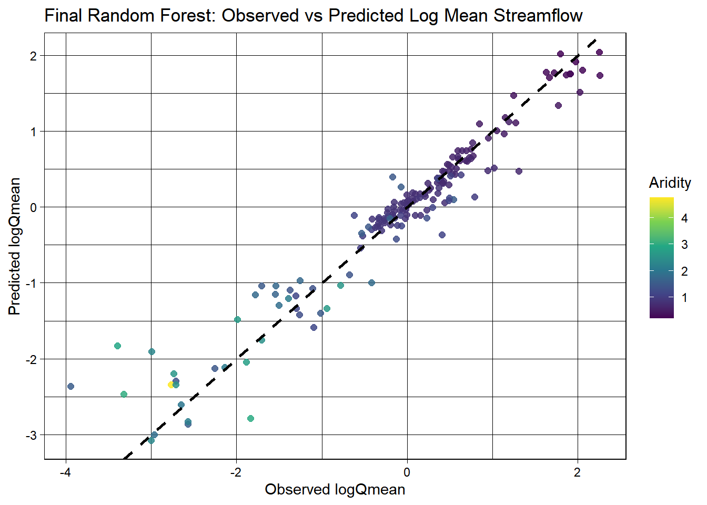
The finalized random forest performed very well on the held-out test set, with an RMSE of 0.325 and an R² of 0.932. These results are slightly better than the spatial cross-validation estimate (RMSE = 0.382, R² =0.889), which suggests the model generalizes well to unseen basins while still being broadly consistent with the spatial-CV assessment. In the observed-versus-predicted plot, most points fall close to the 1:1 line, especially for moderate and high logQmean values, although prediction error appears somewhat larger for the lowest-flow basins. The color gradient suggests that higher-aridity basins cluster toward lower streamflow values, where model predictions are a bit more variable. Next, I would examine residuals by aridity and region to determine whether the remaining errors are concentrated in especially dry basins or in particular geographic settings.